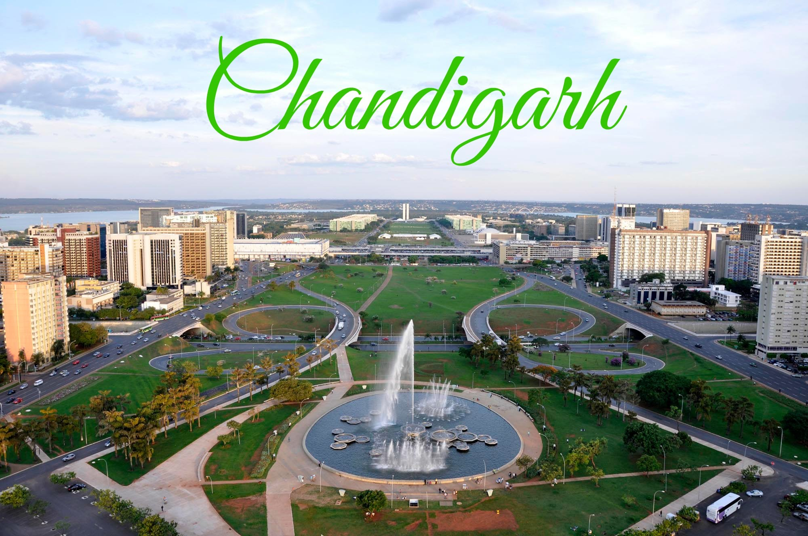

-

Malesia
-
 Aagra
Aagra -
Golden Temple
-
Taj Mahal
Location
Visited
Welcome To The Chandigarh Tourism

Chandigarh, the capital of the northern Indian states of Punjab and Haryana, was designed by the Swiss-French modernist architect, Le Corbusier. His buildings include the Capitol Complex with its High Court, Secretariat and Legislative Assembly, as well as the giant Open Hand Monument. The nearby Rock Garden is a park featuring sculptures made of stones, recycled ceramics and industrial relics.
.jpg)
It was a prosperous place during medieval times and a part of the Punjab Province. After independence from British rule, Punjab was divided into West and East Punjab in 1947. After partition, the East Punjab did not have a capital as Lahore was given to Pakistan. Therefore, Chandigarh was planned in order to give Punjab a capital. So, at the foothills of the Shivalik, the location was sought out for Chandigarh. The city was built under the orders of prominent officers and the Prime Minister of India. But there were many hurdles before the actual city came up. A committee was set up to choose a good site for the city. The place was chosen after considering various aspects like climatic conditions, military vulnerability, water provision, etc. After the formation of Haryana, both the states wanted a capital. So, Chandigarh, due to the proximity and the significance that it had achieved, became the capital of both the states.
Tourism of Chandigarh
Located at the foothills of the grand Shivalik range, the city has earned a good name as a tourist destination for its great planning, the clean environment, the grand structures and the magnificent gardens. It is an incredible city, with many sectors that are intertwined by a great network of roads. Therefore, roaming around is not a problem at all. Today, it takes a prominent place as a tourist destination of India. Nature lovers will love the gardens and the reservoir in the city. Some of the attractions here are very popular among tourists. A few of them are: The Rock Garden Sukhna Lake Rose Garden Government Museum and Art gallery International Dolls Museum Japanese Garden Musical Fountain Butterfly Park Botanical Garden